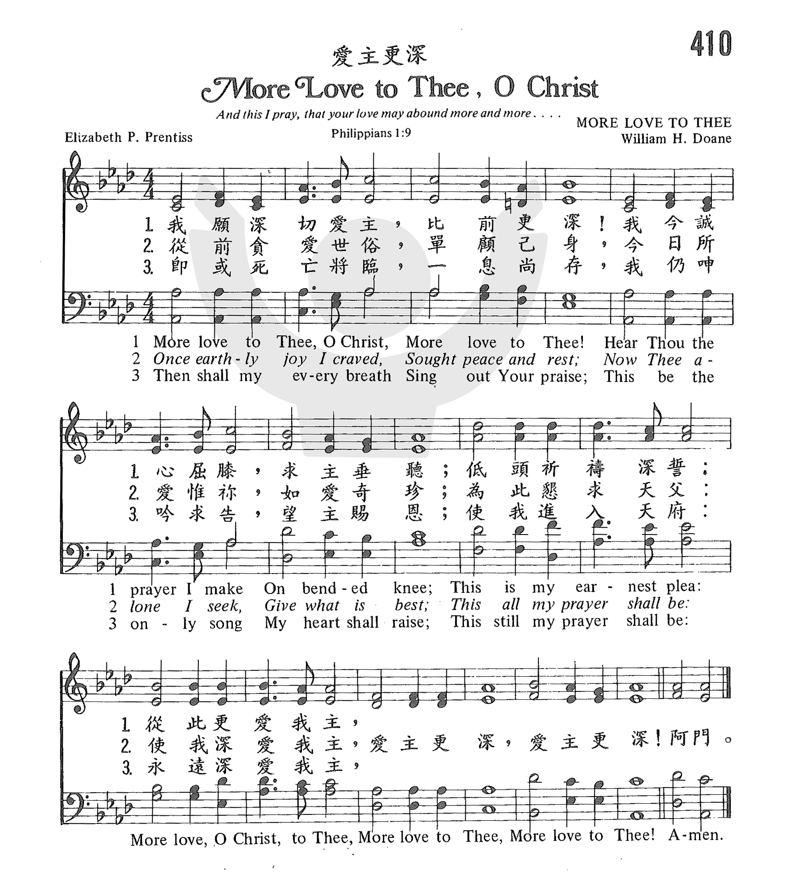

1659 More Love to Thee _E.
Prentiss 更愛我主
| 簡介
More Love
to Thee, O Christ |
Perhaps because this prayer-poem by
the wife of a leading 19th-century Presbyterian minister grew out of her
own physical and emotional suffering, it has continued to speak to many
people in similar distress. This hymn is a prayer that the
Christian would continue to make the love of God his or her highest aim
in life, as the psalmist wrote: “You guide me with your counsel, and
afterward you will receive me to glory. Whom have I in heaven but you?
And there is nothing on earth that I desire besides you.” (Psalm
73:24-25 ESV) Each of the stanzas relates to a step in the Christian
experience. The first stanza is about the prayer of submission to
Christ. The second looks back on the pleasure-seeking life before one
turns to Christ, while the third welcomes the effective, yet painful
process of sanctification. The final stanza looks forward to the day
when the Christian shall see Jesus face to face.
It is set here to the tune created for its first printing in a hymnal.
The tune name derives from the first line of the text. This tune should
be sung in harmony without dragging the tempo. Try singing the third
stanza (if included) a cappella. |
|
|
|
|
1 More love to Thee, O Christ,
More love to Thee!
Hear Thou the prayer I make
On bended knee;
This is my earnest plea:
More love, O Christ, to Thee,
More love to Thee,
More love to Thee!
2 Once earthly joy I craved,
Sought peace and rest;
Now Thee alone I seek,
Give what is best;
This all my prayer shall be:
More love, O Christ, to Thee,
More love to Thee,
More love to Thee!
3 Then shall my latest breath
Whisper Thy praise;
This be the parting cry
My heart shall raise;
This still its prayer shall be:
More love, O Christ, to Thee,
More love to Thee,
More love to Thee!
Baptist Hymnal, 1991
|
更愛我主耶穌，更愛我主；屈膝向主祈禱，懇求垂顧；
這乃真心實言；更愛我主耶穌，更愛我主，更愛我主。
主已將此仁愛賜與我心，故我不得不傳此寶貝信，
快來與我同唱；更愛我主耶穌，更愛我主，更愛我主。
主在十字架上，顯祂大愛，我願一生一世，隨主不改；
主若與我同在，我必不怕遭害，願更愛主，更愛我主。
苦難之中叫我更愛我主，因主為眾罪受死受苦，
主啊！我今情願，更加愛主耶穌，更愛我主，更愛我主。 |
|
https://www.zanmeishige.com/tab/25985.html?songbook=1&index=410

http://pt.fuyinchina.com/m/view.php?aid=7133

https://hymnary.org/hymn/GG2013/page/1018 |
| |
|
http://www.hymncompanions.org/Feb/16/stream.php
更愛我主耶穌，更愛我主；屈膝向主祈禱，懇求垂顧；
此乃真心實言：更愛我主耶穌，更愛我主，更愛我主。
主已將此仁愛，賜與我心，故我不得不傳此寶貝信，
快來與我同唱：更愛我主耶穌，更愛我主，更愛我主。
主在十字架上，顯祂大愛，我願一生一世，隨主不改；
主若與我同在：我必不怕遭害，願更愛主，更愛我主。
苦難之中叫我更愛我主，因主為我眾罪，受死受苦，
主啊我今情願，更加愛主耶穌，更愛我主，更愛我主。
 (請點耳機收聽)
(請點耳機收聽)
許多感人的詩歌，背後都有一個悲傷的故事。 詩人要走出自憐、自譴、怨天尤人的境地，才能在試煉中得勝，以感恩的心來頌揚 神的大愛。
本詩的作者潘黛絲（Elizabeth P. Prentiss
1818-1878）的父親是一位有名的牧師，她有一個美好的童年，從小受良好的文學訓練，並有寫作的恩賜。 她在十六歲時已為當時美國著名的書報雜誌寫稿，且頗負盛名。

1845年依利沙白與長老會牧師及神學院的教授George
Prentiss結婚後，定居紐約，雖身體孱弱，但生活美滿，這段時期，她從事教育工作，學生受她的影響很大；但是沒有多久，她的兩個兒子在短時間內相繼夭折，這個接踵而來的打擊，使她心碎欲絕，幾乎崩潰。
一晚當她與丈夫自墓地回家，經過兩個孩子空蕩寂靜的臥室時，她觸景生情，不禁悲由衷來，哭嚷著說：「我們的家破碎了，生活被毀了，希望落空，美夢幻滅，我覺得真的活不下去了！」她的丈夫回答說：「但正是這樣的時刻，更顯得神愛我們更深！正像我們愛我們的孩子一樣，當他們在痛苦、疾病、患難中時，我們不是更愛他們，更關懷他們嗎？」
等他離去後，她拿起聖經來研讀，又拿起聖詩翻閱。 當她看到「與主相親」（Nearer, My God,
to Thee,見三月十四日）這首詩時，深被感動，知道不應只看環境，應該仰望神，心中就湧出這首「更愛我主」的詩，寫成後，心中乃充滿安慰和喜樂。
因此有人說：“如果沒有「與主相親」那首詩，也許就沒有「更愛我主」這首詩。
自痛苦中所得的屬靈經驗，使她成功地寫了一本暢銷的靈修書「邁向天國」（Stepping Heavenward）。
她這樣說：「我現在體會到為神而活，乃是一件偉大的事情，不論你有沒有恩賜，甚至當神讓苦難臨到你身上時，仍是神奇妙的憐憫，為的是要榮耀神！」
這是何等大的信心！神使她受苦，卻不再是痛苦。 她寫有132首抒情的「宗教詩」（Religious Poem），每一首都洋溢著愛主的心聲。
本歌的作曲者是杜恩（William H. Doane, 見三月十一日）。

中英文聖詩集參考
英文歌名 More
Love to Thee
頌主新歌 340
頌主新歌(中英雙語) 344
教會聖詩 410
生命聖詩 359
新聖詩 205
歡欣讚美 634
聖徒詩集 224
聖詩 251
台語聖詩 338
讚美 221
世紀讚頌 333
讚美詩(新編) 255
校園詩歌I 154
http://malaccagospelhall.org.my/2014/04/%E5%9C%A3%E6%AD%8C%E7%AE%80%E4%BB%8B2-%E6%84%BF%E7%88%B1%E6%88%91%E4%B8%BB%E6%9B%B4%E6%B7%B1/
以上这首诗歌 — 愿爱我主更深 — 是伊丽莎白·朴悌丝夫人(Mrs. Elizabeth Payson Prentiss,
1818-1878)所写的圣歌. 她是一位作家, 也是一位老师. 她于1818年10月26日出生在美国缅因州的波特兰(Portland, Maine).
她所写的灵修小说与儿童故事广受欢迎; 尤其是她写了一部灵修小说《迈向天国》(Stepping
Heavenward, 1869), 更是轰动一时. 她其他著名作品有《宗教诗集》(Religious
Poems, 1873)、《黄金时光》(Golden
Hours, or Hymns
and Songs of the Christian Life, 1874 )、《小传道》(The
Little Preacher, 1874)等等.
朴悌丝夫人自小体弱多病, 身体常感疼痛. 在她21岁那年, 她开始察觉本身虽然生长在基督徒家庭, 父亲是位虔诚的牧师, 但自己却未得救. 她日愈感到罪担沉重,
直到某日, 她听到有人传讲耶稣基督“能拯救到底”(来7:25), 她才决志归主, 得到解脱. 她写道: “当听到这事, 我疲累的心灵获得安息, … 我全人投入,
爱戴和赞美他, 稀奇我以前为何从未这样做过, 并希望我周围的会众都与我一同承认他是万人中最美的.” 离开教堂归家途中, 她心灵经历到前所未有的平安与安息.
1845年, 她嫁给一位长老会的牧师兼神学院教授乔治·朴悌丝(Rev. George Lewis Prentiss). 6年后(1851年),
他们夫妇两人连同两个孩子搬到纽约市(New York City), 在当地的一个教会里同心事奉主. 朴悌丝夫妇非常恩爱, 他们的婚姻为人所羡慕,
尤其是朴悌丝夫人的第一个儿子, 艾迪(Eddy, 出生于1848年)更是讨人喜爱.[2] 可爱的小艾迪为整个家庭带来许多欢笑声.
可是1852年, 小艾迪突然得了重病, 病情每况愈下, 医生束手无策. 朴悌丝夫人描述当时的情景:
“我跪在摇篮边, 轻轻地摇它, 艾迪要我讲故事给他听. 我告诉他大概这样的故事: 妈妈知道有个小孩病得很重, 头痛得很, 全身无力. 神说:
‘我要让这只小羔羊回到我的羊圈, 那么它的小头就不再痛了, 它将成为最快乐的小羔羊.’ 我用小羔羊, 因为艾迪很喜欢它们. … 当我在讲这故事时,
他定睛看着我, 我问道: ‘你想知道这小孩的名字吗?’ 他恳切地说: ‘是的, 妈妈!’ 我握着他的小手, 亲吻它, 说道: ‘他就是艾迪.’ ”
数日后, 在1852年1月16日, 脸色苍白的艾迪就这样离开人间. 那日, 朴悌丝夫人写了以下这首诗, 诗中充满对神的信靠顺服.
致我离世的艾迪, 1月16日:
蒙福的孩子! 亲爱的孩子!
耶稣召你, 我们全家中,
你 — 唯有你 — 被召!
哦! 快! 快投入他的怀抱!
你的安息必然何其甜蜜,
你的保障必然何其安稳.[3]
1853年, 朴悌丝夫人生了第三个孩子, 但这孩子不久也忽然死去. 朴悌丝夫人原本身体虚弱, 加上所钟爱的孩子连续夭折, 令她承受莫大的打击,
心灵对神和信仰开始充满挣扎与矛盾. 1856年的一个晚上, 朴悌丝夫人从孩子的墓地探视回来, 情绪几乎崩溃. 她哭着说: “我们的家庭已经破碎,
我们的生命已经失落, 我们的希望已经粉碎, 我们的梦想已经毁灭, 我再也活不下去了.” 他的丈夫安慰她说: “当我们孩子在痛苦、疾病中, 我们不是更爱他们吗?
这个时刻, 也是神更加爱我们的时候.” [4]
朴悌丝夫人立即安静下来, 打开圣经开始阅读, 接着她翻开诗歌集, 寻求安慰. 她翻到“更与我神相亲”(Nearer, My God, to Thee)[5]这首诗歌,
默想其中的词句和丈夫刚才的劝慰之言, 心中受感, 于是以“更与我神相亲”这首诗歌的格式, 写下了“愿爱我主更深”的歌词.
虽然朴悌丝夫人早在1856年就写了这首诗的词, 但只私下留给自己, 作为勉励之用. 直到13年后的某一天, 她把这首诗给丈夫看, 其夫看了非常感动,
鼓励她将之刊登出来. 霍华德·多恩(W. Howard Doane)读到后, 便为这首诗配上曲子, 成为今日众人所熟悉、所爱唱的“愿爱我主更深”.
朴悌丝夫人也写了许多的诗, 所出版的诗集有收集她多达123首诗. 1878年8月13日, 朴悌丝夫人在美国佛蒙特州的多塞特(Dorset,
Vermont)离世. 隔天, 在葬礼上, 主持葬礼的牧师手拿一本陈旧的小簿子. 朴悌丝夫人生前在这本日记簿里整年的每一日,
都写下富有纪念性的事件和一节经文. 牧师首先读出8月13日的经文:
“我听见从天上有声音说: 你要写下, 从今以後, 在主里面而死的人有福了. 圣灵说: 是的, 他们息了自己的劳苦, 作工的果效也随着他们”(启14:13).
跟着, 他读出8月14日(即葬礼当日)的经文:
“因为神并非不公义, 竟忘记你们所作的工, 和你们为他名所显的爱心, 就是先前伺候圣徒…”(来6:10).
出殡的那一日, 朴悌丝夫人的棺木在许多信徒和亲友陪同下, 前往坟场安葬. 在坟场的仪式结束前, 会众高唱朴悌丝夫人所著的诗歌 — “愿爱我主更深”,
并以这样的歌词来结束:
当今生气息尽, 颂声渐隐,
心中还要讴吟, 爱主更深;
此永为我所愿, 愿爱我主更深,
爱主更深, 爱主更深![6]
附录(1): 朴悌丝夫人给离世的爱子写的诗
To My Dying Eddy, January 16th:
Blest child! dear child! For thee is Jesus calling:
And of our household thee — and only thee!
Oh, hasten hence! To His embraces hasten!
Sweet shall thy rest and safe thy shelter be.[7]
附录(2): “愿爱我主更深”的英文原版
(More love to Thee, O
Christ)
More love to Thee, O Christ, more love to Thee!
Hear Thou the prayer I make on bended knee.
This is my earnest plea: More love, O Christ, to Thee;
More love to Thee, more love to Thee!
Once earthly joy I craved, sought peace and rest;
Now Thee alone I seek, give what is best.
This all my prayer shall be: More love, O Christ to Thee;
More love to Thee, more love to Thee!
Let sorrow do its work, come grief or pain;
Sweet are Thy messengers, sweet their refrain,
When they can sing with me: More love, O Christ, to Thee;
More love to Thee, more love to Thee!
Then shall my latest breath whisper Thy praise;
This be the parting cry my heart shall raise;
This still its prayer shall be: More love, O Christ to Thee;
More love to Thee, more love to Thee!
By Mrs. Elizabeth Payson Prentiss
[1] 取自中文圣诗集《万民颂扬》第423首 — “愿爱我主更深”. 此诗歌的歌名也被译作“更爱我主”.
[2] 艾迪还有一个姐姐名叫安妮(Annie).
[3] 有关此诗的英文版, 请参本文附录(1).
[4] Mrs. Prentiss cried to her husband: “Our home is broken up,
our lives wrecked, our hopes shattered, our dreams dissolved.” Mr. Prentiss
replied: “But it is in times like these that God loves us all the more, just as
we love our own children more when they are sick or troubled in distress.” E.
Michael Rusten & Sharon O. Rusten, The
One Year Book of Christian History (Illinois: Tyndale House Publishers,
2003), 第452页.
[5] 此诗在圣诗集《万民颂扬》第431首.
[6] 上文参考 夏忠坚著, 《敬拜人生 — 我活着是为敬拜》(台北: 道声出版社, 2004年), 第446-447页;
E. Michael Rusten & Sharon O. Rusten, The
One Year Book of Christian History (Illinois: Tyndale House Publishers,
2003), 第32-33, 452-453页; 也参以下网站资料: http://www.cyberhymnal.org/bio/p/r/prentiss_ep.htm; http://www.cyberhymnal.org/htm/m/o/morelove.htm .
[7] Michael Rusten & Sharon O. Rusten, The
One Year Book of Christian History, 第33页.
https://hymnary.org/text/more_love_to_thee_o_christ
This hymn is a prayer that the Christian would continue to make the love of God
his or her highest aim in life, as the psalmist wrote: “You guide me with your
counsel, and afterward you will receive me to glory. Whom have I in heaven but
you? And there is nothing on earth that I desire besides you.” (Psalm 73:24-25
ESV)
Text:
In 1856, Elizabeth Prentiss was going through a time of intense suffering, and
hurriedly wrote this hymn as a prayer expressing her devotion to Christ.
However, she did not show it to anyone until 1869, when it was completed and
published as a leaflet. It became quite popular, and was included in William
Doane's Songs of Devotion for Christian Associations in 1870.
There are four stanzas, and most hymnals include all of them, though a few omit
the third (“Let sorrow do its work”). Each of the stanzas relates to a step in
the Christian experience. The first stanza is about the prayer of submission to
Christ. The second looks back on the pleasure-seeking life before one turns to
Christ, while the third welcomes the effective, yet painful process of
sanctification. The final stanza looks forward to the day when the Christian
shall see Jesus face to face.
Tune:
William Doane wrote MORE LOVE TO THEE in 1870 for this text, with which it was
published in Songs of Devotion for Christian Associations. The tune
name derives from the first line of the text. This tune should be sung in
harmony without dragging the tempo. Try singing the third stanza (if included) a
cappella.
When/Why/How:
This hymn of dedication may be sung at any time of year, perhaps preceding a
time of prayer. It could be paired with another hymn with a similar theme, such
as “My Jesus, I Love Thee” or “Be Thou My Vision.” Another option is to have the
organ or choir perform the hymn prior to prayer. An organ collection of nine
pieces with the theme of “The
Fruit of the Spirit” uses this hymn for the first fruit – love. One choral
arrangement of “More
Love to Thee, O Christ” has an optional cello obbligato.
Text:
In 1856, Elizabeth Prentiss was going through a time of intense suffering, and
hurriedly wrote this hymn as a prayer expressing her devotion to Christ.
However, she did not show it to anyone until 1869, when it was completed and
published as a leaflet. It became quite popular, and was included in William
Doane's Songs of Devotion for Christian Associations in 1870.
There are four stanzas, and most hymnals include all of them, though a few omit
the third (“Let sorrow do its work”). Each of the stanzas relates to a step in
the Christian experience. The first stanza is about the prayer of submission to
Christ. The second looks back on the pleasure-seeking life before one turns to
Christ, while the third welcomes the effective, yet painful process of
sanctification. The final stanza looks forward to the day when the Christian
shall see Jesus face to face.
Tune:
William Doane wrote MORE LOVE TO THEE in 1870 for this text, with which it was
published in Songs of Devotion for Christian Associations. The tune
name derives from the first line of the text. This tune should be sung in
harmony without dragging the tempo. Try singing the third stanza (if included) a
cappella.
When/Why/How:
This hymn of dedication may be sung at any time of year, perhaps preceding a
time of prayer. It could be paired with another hymn with a similar theme, such
as “My Jesus, I Love Thee” or “Be Thou My Vision.” Another option is to have the
organ or choir perform the hymn prior to prayer. An organ collection of nine
pieces with the theme of “The
Fruit of the Spirit” uses this hymn for the first fruit – love. One choral
arrangement of “More
Love to Thee, O Christ” has an optional cello obbligato.
https://www.umcdiscipleship.org/resources/history-of-hymns-more-love-to-thee-o-christ
"More Love to Thee, O Christ"
Elizabeth Prentiss
The United Methodist Hymnal, No. 453
Elizabeth Prentiss
More love to thee, O Christ,
more love to thee!
Hear thou the prayer I make
on bended knee.
This is my earnest plea:
More love, O Christ, to thee.

Loss and sorrow often give birth to hymns. Such is the case of "More Love to
Thee" by Elizabeth Payton Prentiss (1818-1878).
A native of Maine, Prentiss was described as a "bright-eyed, little woman, with
a keen sense of humor, who cared more to shine in her own happy household than
in a wide circle of society."
During the 19th century, middleclass women lived very separate lives from men,
even their husbands. Prentiss' husband, Dr. George L. Prentiss, was a
Presbyterian minister who later served as professor of homiletics and polity at
Union Theological Seminary in New York. His wife, having demonstrated a gift for
both prose and poetry from a young age, wrote books, one of which - Stepping
Heavenward - sold over 200,000 copies in the U.S. alone.
Prentiss also had an important, yet difficult, domestic role. For much of her
life she lived the life of a near invalid, her body often wracked with pain. It
was during these times that she had to refocus her understanding of her own
value and worth from doing to being: "I see now that to live for God, whether
one is allowed ability to be actively useful or not, is a great thing, and that
it is a wonderful mercy to be allowed even to suffer, if thereby one can glorify
Him."
"More Love to Thee" emerged out of a time of personal tragedy. During the 1850s,
the Prentisses lost a child and shortly thereafter a second. Through her grief
she confided in her diary, "Empty hands, a worn-out, exhausted body, and
unutterable longings to flee from a world that has so many sharp experiences."
Inspired by Sarah Adams' hymn, "Nearer, My God, to Thee," Prentiss began to
write her own hymn in an almost identical metrical pattern. She had been
reflecting on Jacob's struggles in Genesis 28:10-22 and found Adams' hymn
on this same theme to be of comfort. In the Genesis narrative of Jacob's
experience at Bethel, Jacob was a traveler who, finding a stone for a pillow one
night, had a dream of angels ascending and descending a ladder. Following his
dream he builds an altar at Beth-El (God's house) out of the stone on which he
had slept and anointed it with oil.

Prentiss completed the four stanzas of her hymn in a single evening, but never
showed it to anyone for 13 years. Finally, in 1869 the poem appeared in leaflet
form and in 1870 was published for the first time in a hymnal, Songs of Devotion
for Christian Associations.
Stanza three reflects most clearly the autobiographical context out of
which the hymn comes:
Let sorrow do its work,
come grief or pain;
Sweet are Thy messengers,
sweet their refrain,
When they can sing with me:
More love, O Christ, to Thee!
William Doane (1832-1915), composer of over 2,000 gospel songs including many
for Fanny Crosby, provided the music associated with this text. The simple
step-wise movement of the melody, slower tempo, and straightforward harmonies
provide a prayerful vehicle for the central petition, "More love to thee."
Just as Sarah Adams repeated "Nearer to thee" 16 times in her hymn, Elizabeth
Prentiss repeats "More love to thee" 13 times. This repetition provides the
singer with that sense of intimacy with Christ for which this era of hymnody is
so known.
On one occasion, Prentiss wrote, "To love Christ more is the deepest need, the
constant cry of the soul . . . out in the woods, and on my bed, and out driving,
when I am happy and busy, and when I am sad and idle, the whisper keeps going up
for more love, more love, more love!"
Dr. Hawn is director of the sacred music program at Perkins School of Theology.
https://hymnstudiesblog.wordpress.com/2008/09/17/quotmore-love-to-thee-o-christquot/
"MORE LOVE TO THEE, O CHRIST"
"I pray that your love may abound yet more and more…" (Phil. 1.9)
INTRO.:
A hymn which asks Christ to help us love Him more and more is "More Love to
Thee, O Christ" (#142 in Hymns
for Worship Revised and #45 in Sacred
Selections for the Church). The text was written by Elizabeth Payson
Prentiss, who was born at Portland, ME, on Oct. 26, 1818, the youngest
daughter of Portland minister Edward Payson. At age sixteen she began writing
both prose and poetry which were published in a Boston magazine named The
Youth’s Companion, with her earliest works appearing in 1834. During her
lifetime, she produced 123 poems, along with novels and devotional works. Her
most famous book is Stepping
Heavenward, which is still in print. After being educated in the schools
of her native city, she taught school for a period of time in Portland, in
Ipswich, MA, and in Richmond, VA. Then in 1845, at the age of 27, she married
George Lewis Prentiss, a Presbyterian minister. The couple had two children
and moved to New York City, NY, where Mr. Prentiss became minister of the
Mercer St. Presbyterian Church and professor of homiletics at Union
Theological Seminary.
Mrs. Prentiss’s most famous hymn was produced around 1856, when after
eleven years of marriage, she was experiencing great personal sorrow, physical
suffering, and mental anguish. The Prentisses had already lost one child by
that time, and a short time afterward the second one died in an epidemic.
Elizabeth asked her husband, "Why should this happen to us, of all people?" He
replied, "Maybe we should ask ourselves why a thing like this should not
happen to us. Are we better than any of the other families who have lost loved
ones in this epidemic?" One evening following this episode, after the couple
had returned from the cemetery to put flowers on their children’s graves,
George was called out to help someone in the neighborhood. Elizabeth went to
her room to study her Bible and read her hymnbook. She looked at the story of
Jacob in the Bible and then noticed the hymn based on it by Sarah Flower
Adams, "Nearer My God, to Thee."
Following the same pattern as the familiar song, the words, "More love,
to Thee, O Christ," came to her mind, and Mrs. Prentiss began writing. She
penned the words so hastily that the final stanza was left incomplete.
However, she apparently thought so little of the poem that she did not show it
to anyone, not even her husband, for some thirteen years. The last line had to
be added in pencil before it could be printed, but it was finally published in
1869 as a leaflet for private distribution and at once became very popular.
The tune (Pendleton) was composed, probably that same year, by William Howard
Doane (1832-1915). Doane wrote many well-known melodies, including that for
Fanny Crosby’s "Safe in the Arms of Jesus." The words and music for "More Love
To Thee, O Christ," as we know the song first appeared in Doane’s 1870 Songs
of Devotion. Though a near invalid for much of her later life, Mrs.
Prentiss continued to publish at intervals, authoring a total of five books
before her death at Dorset, VT, on Aug. 13, 1878.
Among hymnbooks published by members of the Lord’s church during the
twentieth century for use in churches of Christ, the song appeared in the
1917 Selected
Revival Songs published by F. L. Rowe; the 1921 Great
Songs of the Church (No. 1) and the 1937 Great
Songs of the Church No. 2 both edited by E. L. Jorgenson; the 1935 Christian
Hymns (No. 1), the 1948 Christian
Hymns No. 2, and the 1966 Christian
Hymns No. 3 all edited by L. O. Sanderson; the 1963 Abiding
Hymns edited by Robert C. Welch; and the 1963 Christian
Hymnal edited by J. Nelson Slater. Today it may be found in the 1971 Songs
of the Church, the 1990 Songs
of the Church 21st C. Ed., and the 1994 Songs
of Faith and Praise all edited by Alton H. Howard; the 1978/1983 Church
Gospel Songs and Hymns edited by V. E. Howard; the 1986 Great
Songs Revised edited by Forrest M. McCann; and the 1992 Praise
for the Lord edited by John P. Wiegand; in addition to Hymns
for Worship, Sacred
Selections, and the 2007 Sacred
Songs of the Church edited by William D. Jeffcoat.
This song emphasizes the love that we need to have for Christ.
I. According to stanza 1, it should be our earnest plea to have more love for
Christ
"More love to Thee, O Christ, More love to Thee!
Hear Thou the prayer I make On bended knee.
This is my earnest plea: More love, O Christ, to Thee,
More love to Thee, More love to Thee!"
A. Jesus has shown such a great love for us, that we should love Him all the
more: 1 Jn. 4.9-10, 19
B. The idea of making our prayer on bended kneww symbolizes the complete
submission to His will that is necessary before the Lord will hear and answer
us: 1 Pet. 3.12
C. And it needs to be an earnest plea, since we ought not to think that the
Lord will consider our petitions if we pray half-heartedly: Jas. 5.16
II. According to stanza 2, we must love Christ more than anything else in this
world
"Once earthly joy I craved, Sought peace and rest;
Now Thee alone I see, Give what is best.
This all my prayer shall be: More love, O Christ, to Thee,
More love to Thee, More love to Thee!"
A. So many people seek only the joy, peace, and rest that this world offers:
Matt. 16.26
B. Therefore, we must learn to seek the will of Christ first and foremost:
Matt. 6.33
C. This means that, like Peter, we must make it our prayer to love Christ
more than all the other things of this earth: Jn. 21.15-17
III. According to stanza 3, we must not let problems hinder our love for
Christ
"Let sorrow do its work, Come grief or pain;
Sweet are Thy messengers, Sweet their refrain,
When they can sing with me, More love, O Christ, to Thee,
More love to Thee, More love to Thee!"
A. Each of us will surely have his share of sorrow, grief, and pain to work
on us in this life: Job. 14.1
B. Yet God sends us "messengers" to provide comfort in all our tribulations:
2 cor. 1.3-7
C. The encouragement of such "messengers" will help us to show our love for
Christ even in times of trials and troubles: 1 Pet. 1.6-9
IV. According to stanza 4, there is a reward for those who love Christ
"Then shall my latest breath Whisper Thy praise;
This be the parting cry My heart shall raise.
This still its prayer shall be: More love, O Christ, to Thee,
More love to Thee, More love to Thee!"
A. Even in this life, no matter what happens, we can sing praise to Christ if
we really love Him–cf.: Acts 16.25
B. Then, after a life of faithful service to Christ, our latest breath can be
a parting cry of victory: 1 Cor. 15.54-57
C. And following that, the reward for those who truly love Christ will be the
crown of life in heaven: Jas. 1.9-12
CONCL.:
During
her darkest hours, Mrs. Prentiss said, "Our home is broken up, our lives are
wrecked, our hopes shattered, our dreams dissolved. Sometimes I don’t think I
can stand living for another moment, much less a lifetime." Her husband
replied, "This is our opportunity to show forth in our lives that which we
have been preaching and teaching and believing together for so many years. It
is in times like these that God loves us all the more." And she followed his
advice. This hymn is like a prayer put into the form of verse and set to music
to express the desire that should be in the heart of every Christian, that
regardless of what we experience in life we must be determined to tell the
Lord that we want to show "More Love To Thee, O Christ."
http://blog.udn.com/hornman1965/126607580

威廉．杜恩傳奇
有一首聖詩，名叫靠近十架Near the
Cross，相信是許多信徒最愛的一首歌，在培靈佈道或是奮興會中，這首詩歌往往是最常被唱起，尤其是當副歌「十字架、十字架、永是我的榮耀」響起時，更是激勵了眾人來到上帝面前，重新將自己奉獻給神，這首詩歌的作詞人，是我們非常熟悉的芬妮．克洛斯比Fanny
J.
Crosby，一位盲眼女詩人，95年生涯中，留下超過八千首詩歌，感動了無數人，但是我們很少提到這首歌的作曲者，其實，這首歌的作曲者也是十分有名，並且如果我們打開聖詩本，翻到歌本後面的「作曲者目錄」，會發現到這位作曲者還真的不簡單，寫了許多有名的詩歌。
這位作曲者名叫威廉˙霍華德˙杜恩William
Howard Doane（1823-1915），根據各式的百科全書、聖詩介紹等等的記述，他是企業家、發明家、慈善家、作曲家、指揮家，這樣的描述，實在是很有趣，而仔細看他的傳記，更是令人驚訝。
他是一家木工機械企業的董事長以及其他多家公司的負責人，因為在許多機械方面的設計與改良，使的他擁有許多發明專利，並且在1889年的巴黎博覽會中獲得大獎的殊榮。
但是他一生的成就，最令人稱道的是他在音樂方面的貢獻，他從小就顯出音樂方面的天份，14歲就出任學校合唱團的指揮，16歲創作清唱劇「聖誕老人」，他擅長的樂器包括了：長笛、低音提琴、小提琴、管風琴、鋼琴，以及另外一項類似過去小學常用的腳踏風琴的鍵盤簧片樂器。
雖然生長在長老會背景的家庭中，他的信仰卻是建立在浸信會之中，他長年在辛辛那提一所浸信會擔任主日學校長以及詩班指揮，這一生寫了大約2300部作品，包括了詩歌、鋼琴曲、敘事歌、聲樂曲等等，編輯了約43本聖詩本，其中很特別的是跟芬尼˙克洛斯比的合作，大約有一千五百首詩歌是芬尼作詞，他作曲寫成的。
根據傳記作者描述，早年，他並不喜愛寫作聖詩，因為他認為福音詩歌的水準太低，如果他也寫作這方面的音樂，會影響到他身為古典音樂家的聲譽，一直到1862年以後，當時他因為嚴重的心臟問題，多次暈倒，在醫生的建議之下，他搭火車預備到芝加哥治療，在途中，又再次出狀況，這其中的經歷讓他明白到他多次拒絕上帝在詩歌上面的呼召，現在「上帝的審判要來了」(根據他自己的敘述)，因此他決定要順福上帝的帶領。
1862年，他開始出版第一本詩歌本，之後陸續出版其他的歌本，並且大受歡迎，如果我們仔細去搜尋他所創作的詩歌，就會感嘆，原來那麼多感人的詩歌都是出自他的手。
他一生贊助了非常多的福音機構，包括了著名的穆迪聖經學院，以及許多的學校與宣教機構，他去世後，根據他的遺囑，他的女兒們成立了一個海外宣教機構，就是現在的海外宣教研究中心the
Overseas Ministries Study Center。
最後，讓我們來聆聽這首「靠近十架」，思想我們自己上上帝面前的委身。

https://en.wikipedia.org/wiki/William_Howard_Doane
|
William Howard Doane
|

Marble bust of William Howard Doane Cincinnati Art Museum
|
|
Born |
William Howard Doane
February 3, 1832
Preston, Connecticut
|
|
Died |
February 23, 1915 (aged 83)
South Orange, New Jersey
|
|
Nationality |
American |
|
Alma mater |
Woodstock Academy, Denison University (honorary doctorate) |
|
Occupation |
Manufacturer, inventor, church leader, hymn writer, philanthropist |
|
Known for |
Hymn writing, multiple patents, philanthropy |
|
Spouse(s) |
Frances Mary Treat Doane |
|
Children |
Ida Frances Doane, Marguerite Treat Doane |
William Howard Doane (February 3,
1832 – February 23, 1915) was a manufacturer, inventor, hymn writer,
choral director, church leader and philanthropist. He composed over 2000
church hymns. More than seventy patents are credited to him for
innovations in woodworking machinery. His philanthropy led to the renaming
of the Granville Academy, as the Doane Academy, a boys’ and girls' private
preparatory school associated with Denison
University in Granville,
Ohio, where he was a major benefactor.
Early life[edit]
Doane was born in Preston,
Connecticut on February 3, 1832. His parents were Joseph Howes Doane
(1797-1854) and Frances Treat Doane (1799-1881). He was the fifth of eight
children.[1] His
father was the head of Doane and Treat, cotton manufacturers. At a young
age Doane showed impressive musical talent. By early adolescence he was
playing the flute, violin and double bass fiddle.[2]
Doane attended the Woodstock Academy, a
private secondary school affiliated with the Congregational
church and located in Woodstock,
Connecticut. His musical talents enabled him to serve as the school's
choir director.[3] Upon
graduation in 1848, Doane went to work in the accounting section of his
father's company. From there he moved to J. A. Fay & Company, a
woodworking machinery company, for a long career leading to the company's
presidency.[4] On
November 2, 1857 Doane married Mary Frances Treat, the daughter of his
father's partner in their cotton manufacturing business.[5]
Manufacturer and
inventor[edit]
Doane assumed increasing responsibility with
J. A. Fay & Company, as he traveled to assignments in Chicago,
Illinois and Cincinnati,
Ohio. By the age of thirty-four, Doane had risen to the position of
president at the company's new headquarters in Cincinnati.
,_residence_of_William_Howard_Doane_in_Cincinnati,_Ohio.jpg/200px-Sunnyside_(1850),_residence_of_William_Howard_Doane_in_Cincinnati,_Ohio.jpg)
Sunny Side, Doane residence
During his leadership, the company
successfully filed many patents for woodmaking machinery. More than
seventy patents were registered in Doane's name, giving him credit for the
inventions.[6] Doane
guided the company through its most successful years.[7]
His business skills extended beyond
manufacturing. He was the president of the Central Trust and Safe Deposit
Company, as well as a director of the Barney
and Smith Car Company of Dayton,
Ohio. His achievements earned him ‘fellow’ status in several
professional organizations, including the American
Society of Mechanical Engineers, the American Society of Mining
Engineers, the American
Geographical Society and the American
Society for the Advancement of Science.[8][9] Doane
emerged as a prominent figure in Cincinnati's business and cultural life.
By 1879 his accumulated wealth allowed him to purchase the impressive
"Sunny Side" mansion as his family's residence in the city's Mt. Auburn
neighborhood. "Sunny Side" is located in the Mount
Auburn Historic District at 2223 Mt. Auburn Avenue.[10]
Church
activity and hymn writing[edit]
Although raised in a Presbyterian household,
Doane converted to his mother's Baptist faith,
while a young student at Woodstock Academy. This conversion began a
lifelong commitment to service in that church, through his musical
compositions, choir direction, denominational leadership and philanthropy.
Doane was a prolific composer of Christian hymn
tunes. He edited forty-three collections of hymns and composed an
estimated 2,300 works, including hundreds of original hymns and hymn
settings.[11] He
is best known as a longtime collaborator of Fanny
Crosby, having written music for an estimated 1,500 of Crosby's poems.[12] As
well as hymns, Doane composed secular instrumental, vocal, and choral
works, including two cantatas on the legend of Santa
Claus.[13]
At Mt. Auburn Baptist Church in Cincinnati's
Mt. Auburn neighborhood, Doane served long tenures as superintendent of
the Sunday school program and director of the choir.[14][15] As
a denominational leader, he headed the Ohio Baptist Convention
Ministers Aid Society.[16] The
church is located on Mt. Auburn Avenue, a short distance from the Doane
family's "Sunny Side" residence.
Philanthropy[edit]
Doane generously supported Baptist churches
and institutions. He was an important contributor to the Granville
Academy, a school for boys preparing to enter Denison University, a school
with strong Baptist heritage. In recognition of his significant support
for the academy, including funds to construct conservatory buildings for
music and art and a gymnasium, the academy was renamed the ‘Doane Academy’
in 1895.[17][18]
Benefactor for Denison University[edit]
-
Doane Administration (1895), location
of the university's administrative offices
-
Doane Dance Building (1905),
originally a gymnasium, then home to the Art Department, since 1975
home to the Dance Department
-
William Howard Doane Library (1937),
gift of Doane's daughters in their father's memory
-
Pipe organ donated by William Howard
Doane and located in the Library
During his lifetime and through bequests in
his will, Doane's philanthropy included Denison
University, Moody
Bible Institute, Baptist churches, the YMCA,
the Fanny Doane Home for Missionary Children in Granville and many other
religious and civic organizations.[19] After
Doane's death, his wife and daughters continued the philanthropic work.
His daughter Marguerite was a co-founder in 1927 of the Association of
Baptists for World Evangelism. Her generous financial donations supported
the organization through its early years.[20]
Later years[edit]
After retirement from his business
interests, Doane remained productive with music composition, choral
direction, church work and philanthropy. With his wife and daughters he
spent two years traveling in Europe. In 1894 Doane purchased ‘Echo Lodge’
in Watch
Hill, Rhode Island (3 Aquidneck Avenue) as a seasonal seaside
residence. Echo Lodge was located less than thirty miles from Preston,
Connecticut, the childhood home of both Doane and his wife.[21]
Doane died in South
Orange, New Jersey on December 23, 1915. Along with other family
members, he is buried in Spring
Grove Cemetery in Cincinnati.[22]
In 1875 Doane was awarded a Doctorate of
Music degree from Denison
University. He became a major benefactor of the university, where two
buildings continue to memorialize his philanthropy. The Doane
Administration Building, built in 1894, serves as the offices for the
President, Provost and Registrar.[23] William
Howard Doane Library, constructed in 1937, is the main campus library, and
funded by Doane's daughters in his memory.[24]
Doane's support for the
evangelically-oriented Moody
Bible Institute is memorialized in the Doane Memorial Music Building.
The building continues to house the Music Department's faculty, classrooms
and student practice space.[25] The
J. A. Fay & Company's woodworking machinery quality was significantly
improved by Doane's innovations and inventions. The company won numerous
accolades around the world, including at the Paris
Exposition of 1889, where it was awarded the Grand Prix. At the
Exposition Doane was honored as a ‘Chevalier of the Legion of Honor’.[26]
William Howard Doane demonstrated a
remarkable range of talents and achievement throughout his lifetime. His
musical gifts included performance abilities with several instruments,
hymn and cantata composition and choral direction. As a young man, he
showed astute business and financial skills which propelled him to the
presidency of an important manufacturing company by the age of
thirty-four. A capacity for innovation and invention contributed to his
company's success and advancements in the industry. His devotion to his
Christian faith, local Baptist church and its broader denominational
interests was widely recognized. Doane's philanthropy, across civic,
educational and religious institutions, reflected a generous spirit
committed to the common good.
References
https://www.hymnologyarchive.com/william-h-doane
William Howard Doane
3 February 1832—24 December 1915
Music
作者：徐彬

今天我要介紹的詩歌作者名字叫伊莉莎白·佩森·普倫蒂斯（Elizabeth Payson
Prentiss）。她1818年出生於美國緬因州的波特蘭市。父親愛德華.佩森（Edward Payson
1783–1827)是一名才華洋溢的牧師；他十六歲就考上了哈佛，20歲哈佛畢業即當上了緬因州波特蘭一家學校的校長；之後因受其當牧師的父親影響，再去神學院繼續深造，學成後進入衛理公會牧會，不久便成為那個時代具有重要影響力的牧者。母親安·路易絲·希普曼(Ann
Louise Shipman，1784-1848)則出身於一個富裕人家，其父是康州紐黑文(New
Haven)市一家為州政府鑄造貨幣公司的合夥人，同時也涉足保險和債券投資行業，是當地一名著名的商人。在這樣的一個家庭長大，伊莉莎白的童年無論是在精神還是物資生活上過得遠比一般人家充實和富足。

可惜天有不測風雲，就在伊莉莎白9歲那年，父親便因患肺結核而英年早世，留下家中的妻子和大小六個子女。父親的去世給全家人的生活帶來了陰影，但幸運的是作為長女的路易莎（Louisa）在這時候挺身而出，18歲就承擔起了養家的重任。她似乎是繼承了從外祖父那�堭o來的經商基因，先在紐約創辦了一所女子學校，一年後又回到家鄉波特蘭開設了另一家學校。在她母親的全力協助下，學校辦得有聲有色。
不同於姐姐路易莎，伊莉莎白的成長之路則更多的是像她父親。她不但像她父親那樣天資聰穎，才華橫溢，從小就表現出文學寫作的天賦，到16歲時，已經成為一家基督教期刊《青年之友》（The
Youth’s
Companion）的固定撰稿人；而且她也像父親當年那樣，在19歲時就獻身於教育，先是在家�媔}辦了一所面向幼兒的學校；兩年後又受聘去了佛吉尼亞州�堣h滿的一家私立女子學校當了老師。

1845年，伊莉莎白因閨蜜安娜的緣故認識了安娜的哥哥喬治·劉易斯·普倫蒂斯（George Lewis
Prentiss）；兩人結婚後定居在麻薩諸塞州的港口城市新貝德福德，喬治是那�堳n區的三一教堂牧師。成為師母後的伊莉莎白，一度放棄了自己的文學創作愛好，而把重心放在全力協助丈夫牧養教會上。她經常陪伴丈夫去探望會眾中生病或失去親人的家庭，給他們帶來了特別的安慰，同時也參與了教會�堛熙\多事工。
在新貝德福德居住的五年半時間，是伊莉莎白一生中的一段美好時光。當地的居民因有捕鯨業而普遍比較富裕，為了感謝她倆夫婦無私的付出和愛心，每日都在她家門口送上鮮花和蔬果。在那�埵o和喬治更是有了一對愛情的結晶，先後生下一女一子，小名叫安妮和艾迪。作為母親，有一雙兒女整日繞膝在身旁，她倍感幸福。
1851年4月間，因喬治在紐約一家長老會教堂找到了新的牧師職位，伊莉莎白帶著兩個孩子隨丈夫一起離開了新貝德福德。任何新到紐約這座大都市的人都需要一定時間來適應，更何況是帶著一雙兒女的伊莉莎白，許多事情都要從頭開始做起。經過半年多時間的忙碌總算安定下來，時間也到了當年的聖誕佳節。看著兩個歡天喜地的孩子，伊莉莎白心�堣]充滿了柔情和嚮往，因為在她體內又有一個小生命在孕育成長，預期到來年的開春時分即將誕生。可沒想到剛過了聖誕新年，一場人生悲劇的暴風雨就撲面而來。

那年的1月中旬紐約特別寒冷。伊莉莎白4歲的兒子艾迪（Eddy）突然高燒不止，其症狀類似今日之腦膜炎症，而那時的醫生對此病毫無對症之藥。伊莉莎白更是束手無策，眼睜睜地看著兒子在1月16日那天夜�埵b她懷�堻怮嵹惜謅F呼吸。小艾迪是她的心頭肉，在給孩子正式取名時她還特意選用了她最懷念的父親名字，也叫“愛德華”。這時候的伊莉莎白真可謂心如刀割，悲痛萬分。可她還必須強忍住自己的情緒，不讓它徹底崩潰，因為她知道肚子�媮晱螢h孕著另一個幼小的生命。
愛子艾迪去世兩個月後的4月17日，一個女嬰終於呱呱落地，夫婦倆給她取名叫貝西（Bessie）。可禍不單行，這孩子一生下來就進入病危；儘管醫生想方設法延續她的生命，可還是在剛滿月的第二天就夭折了。
短短幾十天之內就親眼目睹了自己兩個孩子生命在眼前消失，對伊莉莎白來說是一種什麼樣的打擊，我們可以從她筆下的部分文字中看到其痕跡。在兒子去世後的日記�埵o這樣寫道：
“我抱著這小小的棺材，但看不見兒子的臉，因為死亡已經如此粗暴地摧殘了他。此時的我兩手空空，空空如也，只剩下疲憊不堪，如此疲憊不堪的軀體，以及那種無法用言語來形容，只想逃離這個給我帶來這麼多痛苦經歷的世界的強烈渴望，….。”
在再度又經歷了女兒貝西死亡後，她甚至還一度產生了埋怨上帝的情緒。在一首名為《我的花圃》的詩�堙A真實記錄了她當時的感受：
「我原以為一群喋喋不休的男孩和女孩
會填滿這空蕩的房間；
隨著每個孩童像花一樣的成長綻放，
我的心房將被鮮花充滿；
可如今屬於那�堛漸u有一個孩子和兩個綠色的墳墓。
這是上帝給我的禮物，
我可回饋祂的只剩下一顆流血、昏厥、破碎的心。」
甚至在很久以後她還在一封給朋友的信中這樣寫道：“在我看來，那些能坐下來哭泣的人，是對苦難的一無所知。”
正當她陷入在如此絕望悲傷的情緒中不可自拔的時候，她那當牧師的丈夫給了她許多的幫助和安慰。在從墓地回來的那天，喬治在與她聊天時建議她把目光轉向神，說：“就像我們在自己的孩子生病或處於各種困境時更加愛他們一樣，上帝在這樣的時刻也會更加地愛我們。”伊莉莎白的心因此大得安慰。於是她下決心要從悲傷中走出來，用一顆更加愛主的心來服事神，並且把她對自己孩子的愛和思念轉化為愛普天下的孩子們，引導他們從小就更加愛慕上帝。
于是十幾年前暫時在她身上“潛伏”下來的文學基因再度爆發，在短短的10天之內伊莉莎白就寫出一本名為《小蘇西的六個生日》的兒童故事書籍，發表後讀者好評如潮；接下來一發不可收，在1853年到1856年的四年之中，她又連續發表了《家庭之花：一本給女孩的書》(1853年)、《只有蒲公英》(1854年)、《亨利和貝西》(1855年)、《小蘇西的六個老師》(1856年)、《小蘇西的小僕人》(1856年)等一系列優秀福音兒童文學作品，其中部分書籍還被翻譯成德、法等國文字。

▲上圖為伊莉莎白所寫的三本成名佳作：《小蘇西的六個生日》《小蘇西的六個老師》《邁向天堂》

也許讀者已經注意到以上作品名單中並沒有出現《愛主更深》（More Love to Thee, O
Christ）這首著名詩歌。然而其實它就是創作於上述時間段中的1856年，只不過伊莉莎白當時寫下此詩的目的只是記錄她那時的一段特殊心緒歷程，並非是想將其發表，而且這首詩也只能算是一個“半成品”，並沒有完全完稿。其這背後的原因又是與她的一個新生孩子有關。
1854年7月23日，伊莉莎白又生下了一個女孩，小名叫閔妮（ Minnie）。夫婦倆對這個再得的新生兒自然是百般呵護。看著女兒一天天長大，伊莉莎白總算放下心來。可沒想到在孩子一歲半時卻得了一場大病，隨著病情加重，甚至還幾度瀕臨死亡。經歷過前面兩個孩子被死神奪去悲劇的伊莉莎白，又一度陷入到驚慌恐懼之中。但那時她已經學會在困境中仰望神。她不但晝夜向神禱告，求主施展大能醫治她的女兒，同時也反復吟唱她所喜歡的讚美詩歌，來幫助自己熬過那段折磨人的時期，直到小閔妮的病情終於轉危為安，逐漸康復。在這期間，有一首名叫《更加與主接近》的詩歌給了她特別的安慰和啟發。
這首詩歌的作者是十九世紀英國的女詩人莎拉.亞當斯（Sarah F.
Adams 1805-1848）。她原本是倫敦一位傑出的莎士比亞劇演員，後來因不幸身體受傷而告別舞臺，轉向文學創作。有一天，她教會的牧師請莎拉寫一首詩歌來配合他主日的講道，題目與《聖經》「創世紀」28章的“雅各之夢”有關。這段經文說的是亞伯拉罕的孫子雅各因得罪了哥哥以掃有被其報復殺害的危險，因而被迫遠走他鄉去避難。在他最孤獨無助的時刻，有一天主的使者在夢中向他顯現；他聽到了耶和華上帝在天梯之上親口賜給他的美好應許，從此讓他重新得力，有了盼望，坦然去面對前方未知的人生困境。莎拉把經文中的曠野、日落、夜深、枕石、做夢、天梯、天使、神的應許等各種場景與主耶穌的十字架救恩信仰融合在一起，寫成了一首優美感人的詩句；全詩更是重複了16次「更加與主接近」（Nearer,
My God To Thee）來烘托她要表達的詩歌主題。
這首聖詩深深地打動到伊莉莎白的心，並且讓她再次想起幾年前失去兩個孩子後從神那�堭o到的安慰及自己所立下的心志，要以更加愛主來回報神的愛。於是她拿起筆步莎拉詩歌的原韻寫下了這首《愛主更深》；在創作中她也反復用了14次的“更愛我主”（More
Love to Thee）來突出自己的心願。
▼下圖為伊莉莎白年輕及中年時期的畫像:


也許是在寫詩過程中伊莉莎白覺得從中得到的安慰已經足夠了，更或許是受到隨時要照看閔妮所受到的影響，這首詩歌寫完前三節和第四節的一部分後就中斷了；此後伊莉莎白更將其置之腦後，連自己的的丈夫都沒有告知。在閔妮康復之後，她又繼續全身心地投入到兒童福音文學的創作之中。
直到1869年的某一天，伊莉莎白想起了多年前所寫的這首詩歌，並將其找出來向丈夫展示，後者鼓勵她以單頁的形式印出來鼓勵其他有相同經歷的人；於是她完成了第四節，並把印好的詩歌發給了他們的幾個朋友欣賞。不久其中的一份流傳到著名的聖樂家威廉·H·多恩(William
H.Doane)的手中，後者因曾因給著名盲人女詩人範妮·克羅斯比(Fanny
Crosby)創作的許多經典詩歌配曲而大名鼎鼎。他因十分喜歡伊莉莎白的這首詩歌，專門為它寫了曲譜，並將其收錄在1870年出版的讚美詩《虔誠之歌》（Songs
of Devotion）詩集之中。這首詩歌就此傳開，成為又一首被無數人喜愛的一首經典詩歌。
下面讓我們一起來欣賞這首詩歌：


我相信每一個瞭解了伊莉莎白的經歷之後再讀這首詩歌的讀者，都會被作者在詩歌中所體現出深沉的愛主之心所感動。其實伊莉莎白的一生中不僅僅是經歷過上述那些磨難，而且她還一直受嚴重的失眠症及各種疾病的困擾和折磨，但這一切都沒有影響她更加愛主的心志，並一直在福音文字事上工上耕耘不止，直到她生命的最後一刻。
在本文寫作中我一直在思考伊莉莎白為什麼能夠做到如此敬虔的內心原因，我在她留下的的部分文字中找到了答案。
在1869年出版的那本自傳體小說《邁向天堂》中，伊莉莎白借著書中那位同樣也失去了親人的主人翁凱蒂這樣說道：“我現在明白，為上帝而活，無論一個人是否有能力發揮積極的作用，都是一件偉大的事情；如果一個人能因此而榮耀祂，即使是自己受苦，那也是一種奇妙的憐憫。”
在1873年寫給朋友的一封信中，她這樣寫道：“更愛基督，是我靈魂中最深切的需要，也是我不斷的呐喊。無論是在玩樂之時，行走林間，躺在床上，或開車途中，無論是我開心和忙碌之時，或是悲傷及空閒之刻，我都會不斷在口中輕聲低語：更多的，更多的，更多的去愛主！”
1878年伊莉莎白因患乳腺癌而病入膏肓，在即將離世前她在教會所做的最後一次見證中對會眾說道：“對於耶穌的門徒來說，死亡只是從一個房間走到另一個房間，而在天父的家中，這是一個更好的房間。當我們回到天家後，回顧這一路上所受的痛苦對我們來說是多麼的微不足道啊!”
寫到這�堙A筆者不禁慚愧不已。是啊，聖經反復提醒教導我們，不要愛慕效法這個世界，而要把眼目定睛於天上永恆的基業。可包括筆者在內的許多基督徒儘管口�堻ㄦ|經常說愛我們的神，可我們在生活中究竟有沒有按主耶穌要求那樣，做到“盡心，盡性，盡力和盡意”呢？我們能不能像伊莉莎白那樣，在經歷了這麼多人生苦難之後，仍然用“更加愛主”之心去繼續服事、讚美我們的主？許多時候，我們是不是把許多世俗的事務擺在聖工之上？我們在得享從神而來的屬天平安和豐盛恩典的同時，有沒有時刻去思量該如何去更加愛主？
親愛的弟兄姐妹，環顧我們的周邊，在疫情發生的這幾年中有多少曾經是教會的“常客”被這個世界的各種誘惑和嚇阻而偏離了真道，以至於長久不來教會敬拜我們的主，即便有很方便的主日網路直播也是如此。保羅當年的警告正成為我們眼前的事實，“仇敵魔鬼好像咆哮的獅子四處遊走，尋找可以吞吃的獵物。”（彼得前書5:8
當代譯本）願你我從伊莉莎白的人生經歷和她的這首詩歌的亮光中受到啟發和激勵，成為一個像她那樣敬虔和愛主的基督徒，在走十字架的道路上永不回頭，經得起未來任何可能面臨的試探和磨難，直到我們親愛的主耶穌再次降臨的那一天！

▼下面請欣賞兩首筆者為大家特別推薦的，由華人伊甸盲人喜樂樂團和美國“國王的使者”樂隊（The King’s
Heralds）演唱的男聲四重奏《爱主更深》：
https://ocbf.ca/2019/more-love-to-thee/


,_residence_of_William_Howard_Doane_in_Cincinnati,_Ohio.jpg)

.jpg)
,_Denison_University,_Granville,_Ohio.jpg)